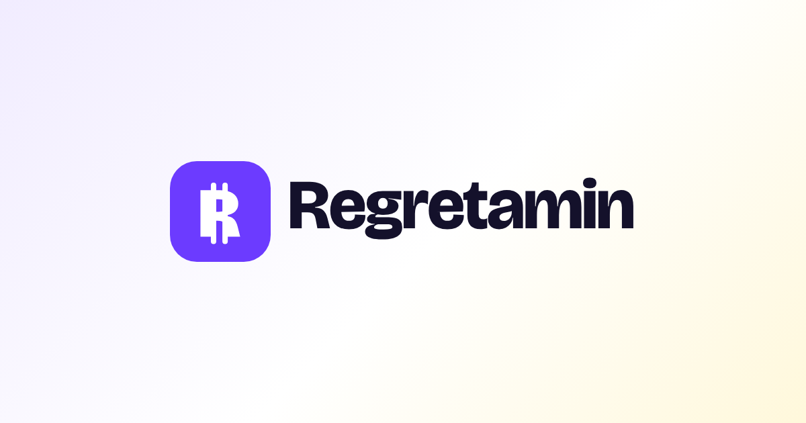

design catalog
Reads src/css/tokens.css, src/css/common.css and src/js/strings.js directly, so it stays in sync. Rules: .cursor/rules/design.mdc.
Content rules
- Each fact once per page; link to it elsewhere.
- Show “No data yet” for a missing source; never hide the slot.
- Say “No red flags found in these sources”. Never “safe”.
- A checked date, who checked it, and the source level are stored. They are never shown on the live site.
- Mock/example data carries the yellow Mock badge.
- Wording changes need Alex's approval.
Logo
assets/logo/ · .logo .lockup · --logo-*R2: white double-stroke “R” (currency style) in a violet #6C3BFF rounded square, ink “Regretamin” wordmark (outlined Bricolage 800). Dark backgrounds use the -dark files (white wordmark). To swap the logo, replace the files in assets/logo/ — every page points at the same paths.
Clear space: at least half the icon height on every side. Nav 36px, footer 28px; minimum lockup height 24px.
Dark: lockup-dark.svg / icon-dark.svg.

Don't: recolour the square or wordmark, use the full icon below 20px (use fav16), stretch or re-type the wordmark in live text, add effects or outlines, place the light lockup on violet or busy photos, go below 24px lockup / 16px icon. The brand name in text is brand.name.
Colors
--*Status roles
--clear/review/flag/nodata/queuedDot / -bg / -tx. Status only, never decoration.
Type scale
--fs-*Spacing · radius · shadow
Motion
--dur-* · --ease · .rs-fade-in · .rs-tickHover .15s · tabs/toggles/modal .25s · fade-in .4s · count-up 900ms · checklist stagger 60ms. All disabled under prefers-reduced-motion.
Nav
.pillnav .logo .links .rButtons · chips · badge
.b.c .b.v .b.w · .chip .on .soon · .phTabs
.tabs button.onSentiment tag
.snt.pos/.neu/.negToggle
.tog .sw2 · .tog.onPlanned components (from approved mockups)
Databases checklist, Full dossier paywall, unlock/sample frames, verdict pill, “No data yet” empty state, queued state. Build into common.css when the trust-check pages ship; specs in the approved mockups (docs/design/README.md).
Text slots with variants
strings.jsEvery slot that can show different texts. Variant = the condition that selects it. planned = defined for the new flow, not wired yet.
| Key | Variant | When | Text |
|---|